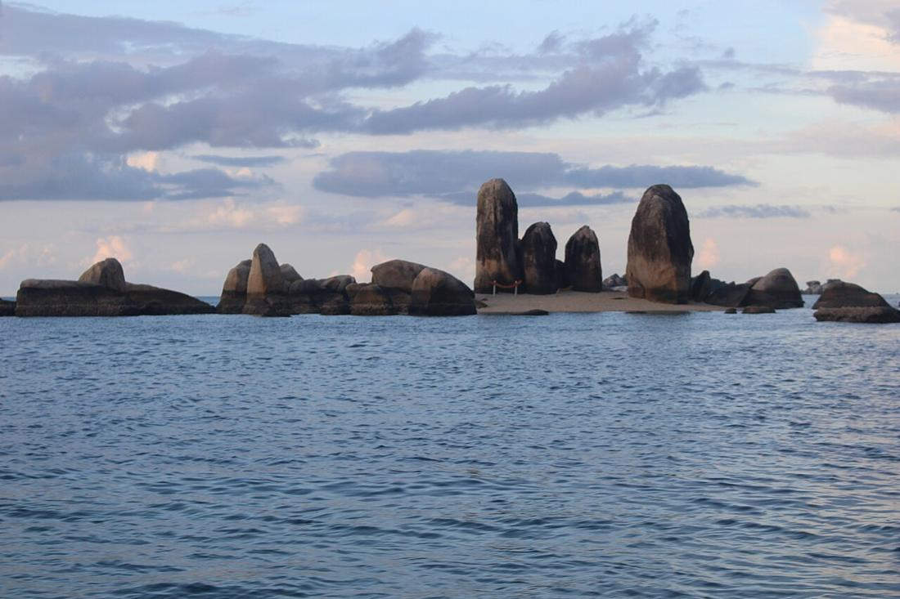

Geopark Belitong: Ketika Batu, Hutan, dan Budaya Diakui Dunia
Pada April 2021, UNESCO menetapkan Belitong sebagai UNESCO Global Geopark karena kekayaan geologi, hayati, dan budayanya yang saling terkait.

Granit raksasa di pantai, hutan yang menyimpan tanaman obat, sampai tradisi warga yang hidup dari laut dan ladang. Semua itu bukan cuma pemandangan cantik. Pada 2021, dunia internasional mengakuinya sebagai satu kesatuan bernama Geopark Belitong.
Apa itu UNESCO Global Geopark?
Secara sederhana, geopark adalah kawasan yang warisan geologinya dijaga sambil dimanfaatkan untuk pendidikan dan ekonomi warga. KWRI UNESCO menekankan pengelolaan geopark yang mengedepankan pendidikan, sains, pemberdayaan masyarakat lokal, dan pembangunan berkelanjutan. Jadi status ini bukan sekadar label wisata. Ada tanggung jawab yang ikut datang bersamanya.
Bagaimana Belitong ditetapkan?
Menurut UNESCO, Belitong masuk Jaringan Global Geopark dalam sidang ke-211 Dewan Eksekutif UNESCO yang digelar daring pada 7–21 April 2021. Delegasi Tetap RI untuk UNESCO (KWRI UNESCO) mencatat penetapannya pada 15 April 2021, bersama tujuh nominasi lain. Sebelumnya, Dewan UNESCO Global Geopark sudah memberi rekomendasi positif dalam sidang 8–9 Desember 2020.
KWRI UNESCO juga menyebut Geopark Belitong sebagai geopark nasional Indonesia ke-6 yang masuk daftar UNESCO Global Geopark, setelah Kaldera Toba, Batur, Ciletuh, Gunung Sewu, dan Rinjani.
Kenapa Belitong istimewa?
Masih menurut KWRI UNESCO, UNESCO mengakui keberagaman geologi Pulau Belitung dan kepulauan di sekitarnya: lanskap, bebatuan, mineral, serta proses geologi dan tektonik yang merekam evolusi bumi. Yang membuatnya menonjol adalah keterkaitan erat antara geologi, kehidupan alam, dan budaya. Bentang alam Belitung menjadi rumah bagi flora dan fauna, beberapa di antaranya hanya ditemukan di Belitung, seperti ikan hampala dan ikan toman. Kekayaan hayati itu juga dimanfaatkan masyarakat, salah satunya lewat tanaman herbal.
Contoh paling mudah dilihat adalah granit di pesisir utara. Kompas Muda menulis bahwa granit di Tanjung Kelayang dan Tanjung Tinggi merupakan bagian dari batolit, batuan beku yang menjadi dasar Indonesia bagian barat, dengan usia hingga 245 juta tahun.
Jadi wisatawan yang ikut menjaga
Status geopark membawa harapan: geowisata dan edukasi yang membuka lapangan kerja bagi warga, sekaligus kesadaran untuk merawat lingkungan. Sebagai pengunjung, kita bisa ikut berperan dengan cara sederhana:
- pakai pemandu lokal kalau tersedia;
- jangan memanjat, mencoret, atau mengambil batu dan karang;
- beli produk dan kuliner dari warga setempat;
- bawa pulang sampah sendiri.
Lain kali berdiri di depan bongkahan granit Belitung, ingat bahwa batu itu sudah ada jauh sebelum manusia, dan sekarang jadi tanggung jawab kita bersama.
Sumber: lihat daftar sumber di bawah. Tulisan ini disusun ulang oleh tim iTAP Belitung.
Sumber
- www.unesco.org/en/articles/belitong-indonesia-becomes-asia-and-pacifics-newest-unesco-glob
- kwriu.kemendikdasmen.go.id/berita/belitong-ditetapkan-sebagai-geopark-unesco-global-geopar
- muda.kompas.id/baca/2016/07/28/belitung-tempat-waktu-berhenti-di-masa-lalu-2/
Ditulis ulang oleh tim iTAP Belitung dari sumber di atas. Ada yang keliru? Kabari kami lewat Kirim kabar atau email putraanandateguh@gmail.com.